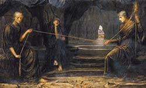

Мойри ("частина", "частка"), в грецькій міфології богині долі. В уявленнях греків Мойра-доля кожного втілюється в якомусь матеріальному предметі - фетиші, носії життєвих сил. Так, мойра героя Мелеагра, учасника походу аргонавтів, була укладена в залишилася від жертовного вогнища головне, захованої його матір'ю. Бажаючи погубити сина, мати кинула головешку в вогонь, де та згоріла, викликавши болісну смерть Мелеагра.
Згодом Мойри розуміються як рок ("те, що проказане") і доля ("те, що судилося"); це темна сила, яка не має чіткого вигляду. Найбільш поширений міф - це міф про трьох сестер-Мойра, дочок Ночі, яка породила також Смерть, Гипноса, Немезиду, Еріду і Гесперид. Їх імена - Лахесис ("дає жереб"), Клото ("прядущая") і Атропос ("невідворотна").
Вважалося, що Лахесис призначає жереб ще до народження людини, Клото пряде нитку його життя, а Атропос неухильно наближає майбутнє, ножицями відрізуючи нитку життя. Мойри причетні Зевсу - іноді він іменується Моріем. Зевс і Аполлон називаються також Мій-рагетамі ("водіями мойр"). Епітет Зевса "вершитель доль" (напис на жертовнику в Олімпії) означає, що верховний бог "знає людські справи і все те, що зумовлювали Мойри, і все, в чому вони відмовили".
У римській міфології їм відповідають парки. Парки, римські богині долі, при народженні дитини визначали його долю у вигляді нитки, яку вони пряли, відміряли і відрізали. На відміну від грецьких мойр, сумних, занурених у роботу дев, римські парки - злісні человеконенавістніци. Зазвичай вони представлені в образі жахливих і злісних бабусь.
На офорті Франсиско Гойї Децима (ліворуч) тримає веретено у вигляді безпорадного немовляти, Норта дивиться через збільшувальне скло, а Морта (крайня праворуч) клацає ножицями. Четверта фігура можливо символізує загальний напрямок долі.
У скандинавській міфології мойрам відповідають богині долі норни. Вважалося, що норни лише визначали долю богів, велетнів, карликів і людей, але не могли нею розпоряджатися, хоча іноді вони віщували нещастя.